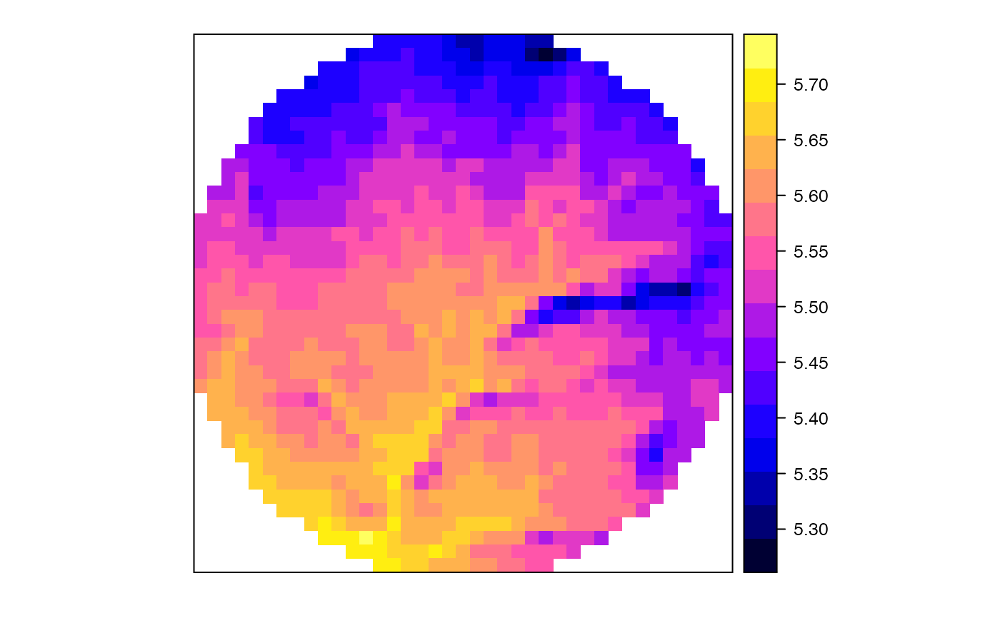
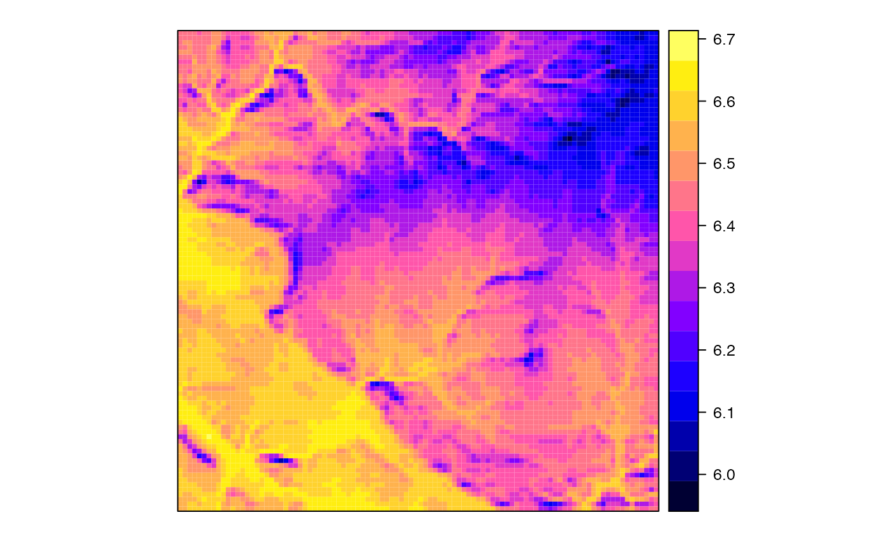

Interpolate daily meteorology over a landscape
interpolationpoints.RdFunctions to interpolate meteorological data for spatial locations (at points, grid pixels or full grids) using an object of class MeteorologyInterpolationData-class.
interpolationpoints(object, points, dates = NULL, export = FALSE, exportDir = getwd(), exportFile = NULL, exportFormat = "meteoland/txt", metadataFile = "MP.txt", verbose=TRUE) interpolationpixels(object, pixels, dates = NULL, exportFile = NULL, exportFormat = "netCDF", add = FALSE, overwrite = FALSE, verbose=TRUE) interpolationgrid(object, grid, dates = NULL, exportFile = NULL, exportFormat = "netCDF", add = FALSE, overwrite = FALSE, verbose=TRUE)
Arguments
| object | An object of class |
|---|---|
| points | An object of class |
| pixels | An object of class |
| grid | An object of class |
| dates | An object of class |
| export | If |
| exportDir | Output directory for interpolated meteorology data files (txt/rds format). |
| exportFile | Output file for interpolated meteorology data (netCDF format). |
| exportFormat | Export format for meteorological data (see |
| metadataFile | The name of the ascii text file that will store the meta data describing all written files. |
| verbose | Boolean flag to print process information. |
| add | Boolean flag to indicate that NetCDF exists and data should be added/replaced. |
| overwrite | Boolean flag to force overwriting an existing NetCDF. |
Value
If export = FALSE, function interpolationpoints returns an object of SpatialPointsMeteorology-class. If export = TRUE files and written in the disk. For text/rds format the function returns an object of class SpatialPointsDataFrame-class containing point meta data.
If export = FALSE, function interpolationpixels returns an object of SpatialPixelsMeteorology-class, or an object of SpatialPixelsDataFrame-class if a single date is interpolated. If export = TRUE, the function writes the results in a NetCDF.
If export = FALSE, function interpolationgrid returns an object of SpatialGridMeteorology-class, or an object of SpatialGridDataFrame-class if a single date is interpolated. If export = TRUE, the function writes the results in files and a data.frame with columns 'dir' and 'filename' is returned.
Details
CRS projection needs to be defined for both object and points/pixels/grid. If CRS projection is different between object and points/pixels/grid, the function transforms the coordinates of points/pixels/grid to adapt them to the CRS of object.
References
Thornton, P.E., Running, S.W., White, M. A., 1997. Generating surfaces of daily meteorological variables over large regions of complex terrain. J. Hydrol. 190, 214–251. doi:10.1016/S0022-1694(96)03128-9.
De Caceres M, Martin-StPaul N, Turco M, Cabon A, Granda V (2018) Estimating daily meteorological data and downscaling climate models over landscapes. Environmental Modelling and Software 108: 186-196.
Author
Miquel De Cáceres Ainsa, CTFC
See also
penman, SpatialPointsTopography-class, SpatialGridTopography, SpatialPixelsTopography, MeteorologyInterpolationData
Examples
data(examplegridtopography) data(exampleinterpolationdata) ####### INTERPOLATION on particular POINTS #Creates spatial topography points from the grid p = 1:2 spt = as(examplegridtopography, "SpatialPointsTopography")[p] #Interpolation of two points for the whole time period (2000-2003) mp = interpolationpoints(exampleinterpolationdata, spt)#> Processing point '1' (1/2) - done. #> Processing point '2' (2/2) - done.####### INTERPOLATION on PIXELS # Creates spatial topography pixels as a subset of grid pixels # and select pixels at maximum distance of 2km from center spt = as(examplegridtopography,"SpatialPointsTopography") cc = spt@coords center = 5160 d = sqrt((cc[,1]-cc[center,1])^2+(cc[,2]-cc[center,2])^2) spxt = as(spt[which(d<2000)], "SpatialPixelsTopography") # Interpolation of meteorology over pixels for two days ml = interpolationpixels(exampleinterpolationdata, spxt, as.Date(c("2001-02-03", "2001-06-03")))#> Warning: CRS object has comment, which is lost in output#> Warning: CRS object has comment, which is lost in output#> Interpolating day '2001-02-03' (1/2) - done. #> Interpolating day '2001-06-03' (2/2) - done.#Plot PET corresponding to 2001-06-03 spplot(ml,2,"PET")####### INTERPOLATION over a complete GRID #Interpolation of meteorology over a grid for two days ml = interpolationgrid(exampleinterpolationdata, examplegridtopography, as.Date(c("2001-02-03", "2001-06-03")))#> Warning: CRS object has comment, which is lost in output#> Warning: CRS object has comment, which is lost in output#> Interpolating day '2001-02-03' (1/2) - done. #> Interpolating day '2001-06-03' (2/2) - done.#Plot PET corresponding to 2001-06-03 spplot(ml,2,"PET")